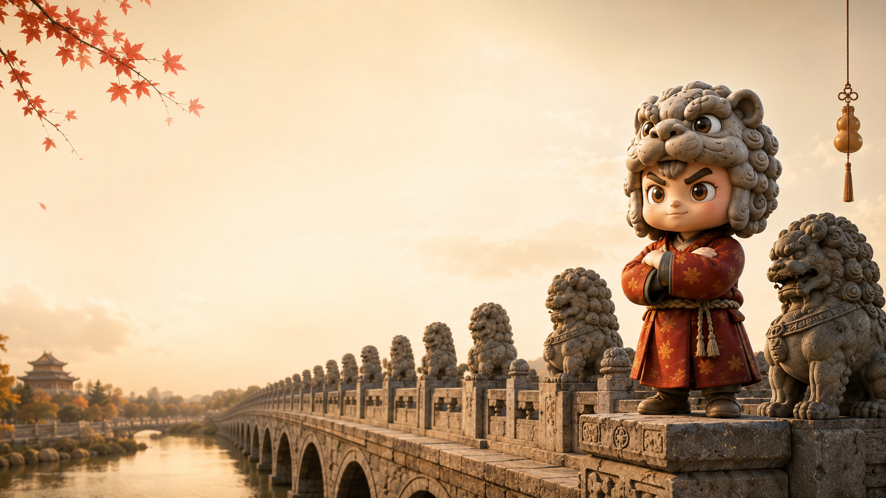
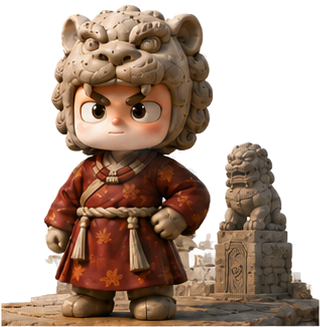
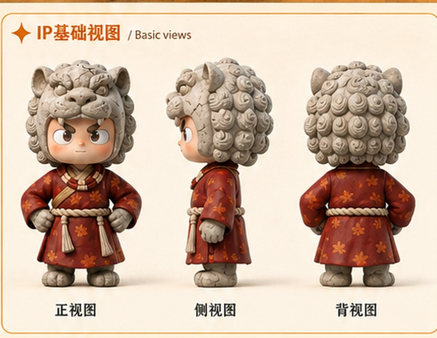
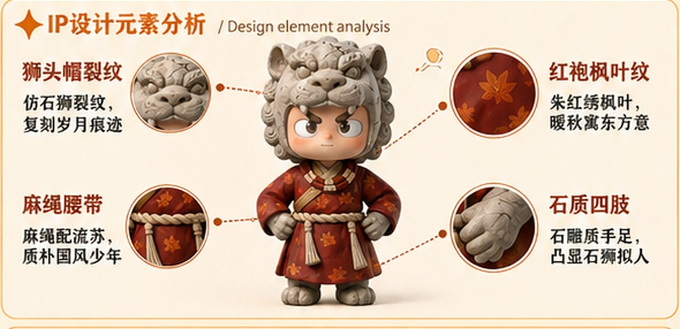
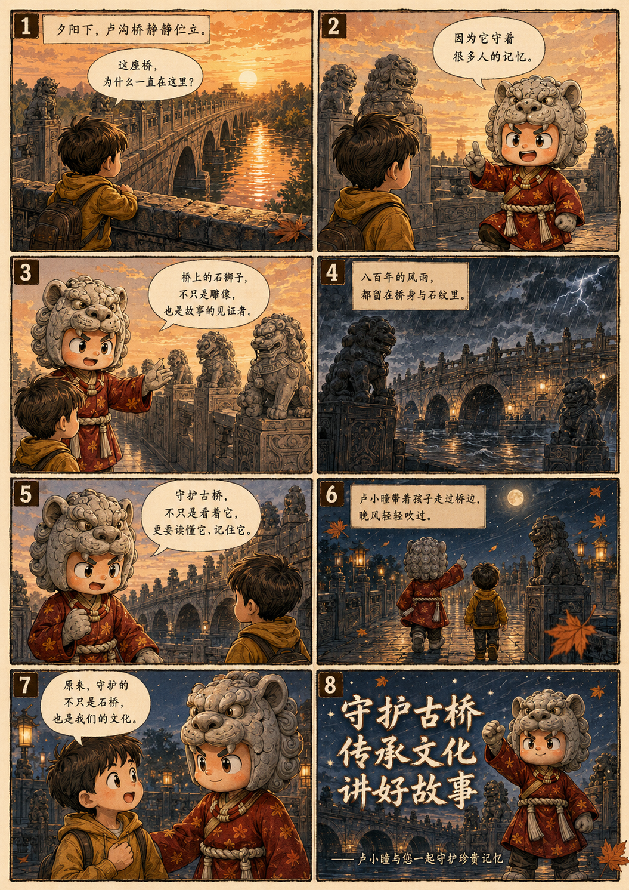
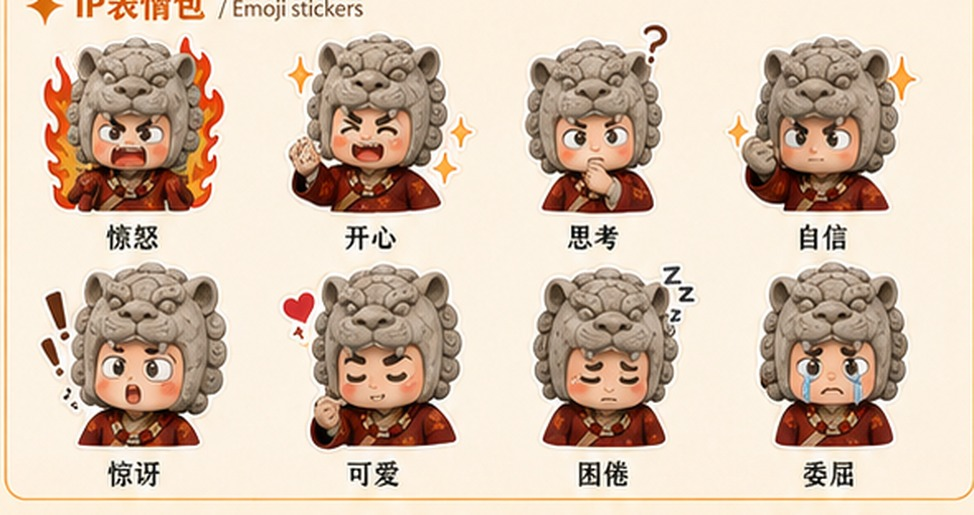
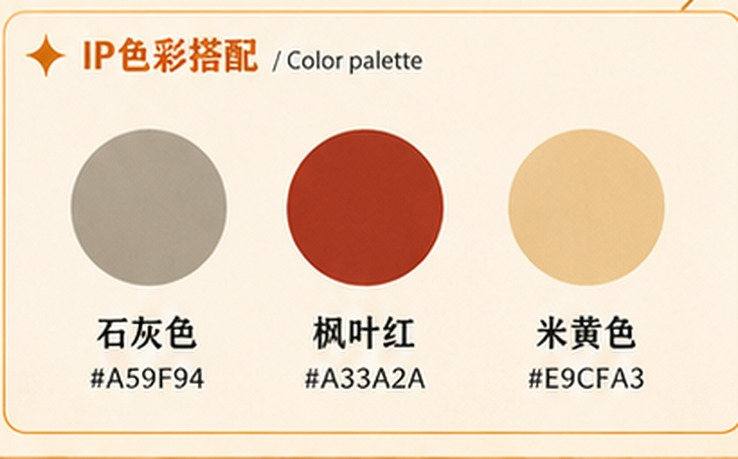

Role Setting
卢沟桥的守护者
把石狮的厚重、古桥的记忆和少年角色的亲和感合并成一个可叙事、可传播、可转化的 IP 形象。

Lugou Bridge Guardian IP
从石狮裂纹里走出的少年守护者，让千年古桥的记忆以更亲近的方式被看见、被讲述、被收藏。
以卢沟桥石狮子为角色原点，保留历史肌理与建筑记忆。
把厚重的故事转译成少年化、亲和化、可传播的 IP 语言。
用表情包、漫画、礼盒与日用周边延展古桥的当代表达。
IP Profile
卢小瞳不是单一形象，而是一套围绕卢沟桥文化记忆建立的角色系统：能被识别，也能被叙事。

Role Setting
把石狮的厚重、古桥的记忆和少年角色的亲和感合并成一个可叙事、可传播、可转化的 IP 形象。


Story World
网页不只陈列成品，也把 IP 的叙事能力展开：从晨昏桥景到夜雨守望，形成可继续扩写的故事世界。
雾色、灯火、石狮和桥栏共同构成角色的精神场域，给 IP 留出更完整的情绪背景。

Visual System
核心识别不只来自人物轮廓，也来自裂纹、枫叶、石灰色、桥栏和灯笼等可复用视觉符号。


Product Showcase
围绕“卢小瞳”角色识别建立完整产品矩阵，从收藏型摆件到日常使用物件，保持统一视觉语言与可落地的售卖场景。

产品展示采用“主陈列 + 单品细节”的结构，强化系列完整度，也方便后续扩展到展台、网店和比赛答辩页面。